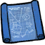
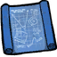
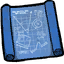

| Blueprint | |
|  |
|
| 15 | |
| Perk | Unlocks prototypical items upon using |
| Stacks up to | Does not stack |
| DebugSpawn | "(prefab name)_blueprint" |
| “ | KNOWLEDGE WAITING TO BE ABSORBED | ” |
| –WX-78 | ||
A Blueprint is an item that, when used, allows the player to prototype some craftable items, raising sanity by 15. They can be found in some Set Pieces and at the beginning of each world in Adventure Mode.
The player can find more than one Blueprint that unlocks the same recipe, and all Blueprints will increase sanity when used, even if the player has already researched the item before.
There's a different console command for each prototypical item in the game. For instance to spawn a Blueprint for a Spear, type : DebugSpawn("spear_blueprint")
If the player uses the console to make all recipes available, all random blueprints spawned will be called "MISSING NAME".
In the Reign of Giants DLC there is an alternative method of getting Blueprints, by destroying Tumbleweed. This means players can now get renewable Blueprints in Sandbox Mode. The player can also obtain Blueprints for items in the Ancient Tab, but even after using these the player will need to be near an Ancient Pseudoscience Station to craft the item.
{kind=link}